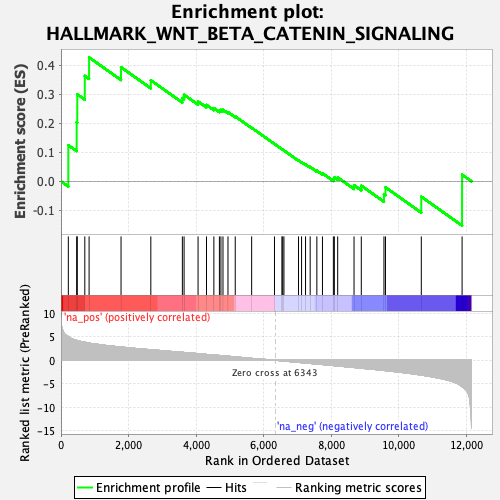

| | | Dataset | DE_t |
| Phenotype | NoPhenotypeAvailable |
| Upregulated in class | na_pos |
| GeneSet | HALLMARK_WNT_BETA_CATENIN_SIGNALING |
| Enrichment Score (ES) | 0.42711696 |
| Normalized Enrichment Score (NES) | 1.1947384 |
| Nominal p-value | 0.19008264 |
| FDR q-value | 0.17048697 |
| FWER p-Value | 0.742 |
Table: GSEA Results Summary

Fig 1: Enrichment plot: HALLMARK_WNT_BETA_CATENIN_SIGNALING
Profile of the Running ES Score & Positions of GeneSet Members on the Rank Ordered List
| SYMBOL | RANK IN GENE LIST | RANK METRIC SCORE | RUNNING ES | CORE ENRICHMENT | | 1 | NOTCH4 | 217 | 5.057 | 0.1245 | Yes |
| 2 | WNT5B | 464 | 4.225 | 0.2037 | Yes |
| 3 | GNAI1 | 482 | 4.190 | 0.3001 | Yes |
| 4 | HEY1 | 705 | 3.833 | 0.3636 | Yes |
| 5 | DKK4 | 832 | 3.643 | 0.4271 | Yes |
| 6 | CCND2 | 1778 | 2.813 | 0.3932 | No |
| 7 | DKK1 | 2660 | 2.235 | 0.3484 | No |
| 8 | FZD8 | 3594 | 1.684 | 0.2872 | No |
| 9 | FZD1 | 3645 | 1.657 | 0.2984 | No |
| 10 | HDAC5 | 4059 | 1.403 | 0.2752 | No |
| 11 | NOTCH1 | 4309 | 1.237 | 0.2632 | No |
| 12 | CUL1 | 4527 | 1.109 | 0.2522 | No |
| 13 | WNT6 | 4691 | 1.018 | 0.2445 | No |
| 14 | LEF1 | 4736 | 0.995 | 0.2464 | No |
| 15 | NUMB | 4797 | 0.960 | 0.2466 | No |
| 16 | RBPJ | 4945 | 0.854 | 0.2385 | No |
| 17 | TP53 | 5160 | 0.722 | 0.2237 | No |
| 18 | PSEN2 | 5646 | 0.395 | 0.1846 | No |
| 19 | PPARD | 6322 | 0.013 | 0.1289 | No |
| 20 | KAT2A | 6542 | -0.123 | 0.1109 | No |
| 21 | DVL2 | 6566 | -0.133 | 0.1091 | No |
| 22 | PTCH1 | 6602 | -0.155 | 0.1064 | No |
| 23 | NCSTN | 7034 | -0.447 | 0.0719 | No |
| 24 | CSNK1E | 7124 | -0.509 | 0.0660 | No |
| 25 | TCF7 | 7242 | -0.593 | 0.0583 | No |
| 26 | NCOR2 | 7379 | -0.677 | 0.0496 | No |
| 27 | CTNNB1 | 7577 | -0.792 | 0.0369 | No |
| 28 | SKP2 | 7743 | -0.904 | 0.0278 | No |
| 29 | HDAC2 | 8066 | -1.130 | 0.0084 | No |
| 30 | JAG1 | 8095 | -1.149 | 0.0134 | No |
| 31 | HDAC11 | 8194 | -1.203 | 0.0134 | No |
| 32 | MYC | 8678 | -1.537 | -0.0133 | No |
| 33 | HEY2 | 8893 | -1.696 | -0.0150 | No |
| 34 | AXIN1 | 9564 | -2.168 | -0.0441 | No |
| 35 | MAML1 | 9609 | -2.207 | -0.0206 | No |
| 36 | ADAM17 | 10670 | -3.145 | -0.0529 | No |
| 37 | JAG2 | 11878 | -5.612 | 0.0229 | No |
Table: GSEA details [plain text format]
Fig 2: HALLMARK_WNT_BETA_CATENIN_SIGNALING: Random ES distribution
Gene set null distribution of ES for HALLMARK_WNT_BETA_CATENIN_SIGNALING